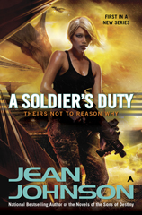

Latest Review
A Soldier's Duty by Jean Johnson
A Soldier's Duty is the first book in the Theirs Not to Reason Why series and begins with an interesting premise: How do you stop a disaster that will not happenfor 300 years after you are dead? Our heroine Ia is what is known as a precog. She has a terrible vision of the future and there is only one way to prevent that from happening. This details the start of her journey to keep the universe existing. The series is an ode to the military and starts with Ia in boot camp. The author made sure to make the militay aspect as accurate as possible.
This is a great start to an amazing series. Ia's journey through the ranks while working to save the known universe is well supported with great details and world building. There are characters mentioned that I would love to know more about. This is a great Military Sci-Fi and I highly recommend if you have not read anything by Jean Johnson.
Click here to read an excerpt.
New Author to Read
Here are some authors releasing new books this week that seemed interesting.
| Author | Title |
|---|---|
| K. M. Hade | Shard (Cruelly Made Book 2) |
| Lara Adrian | Fall of Night |